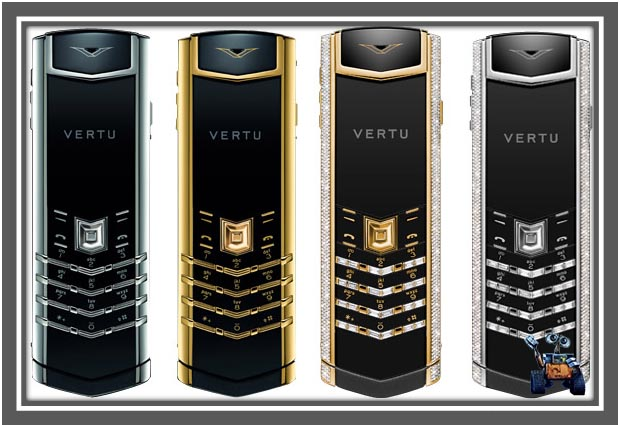
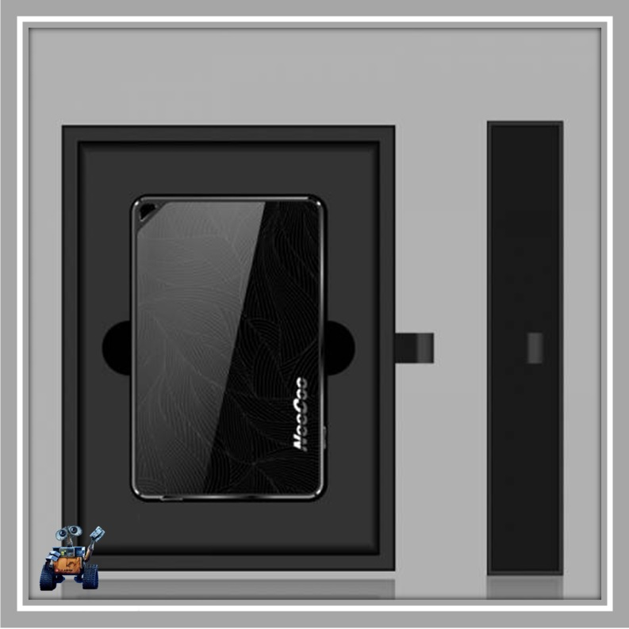
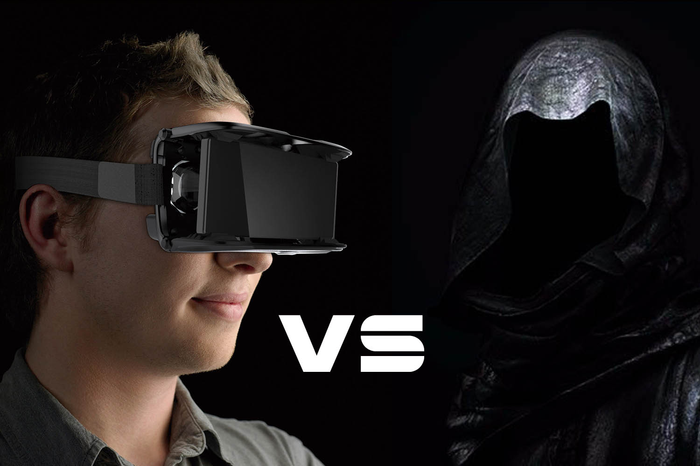
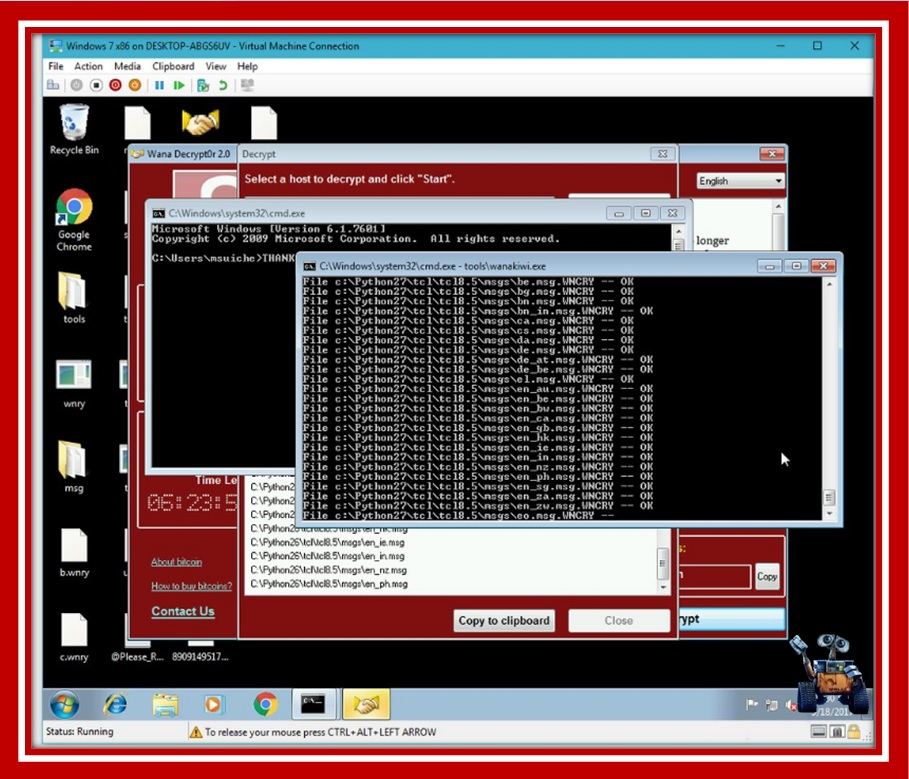
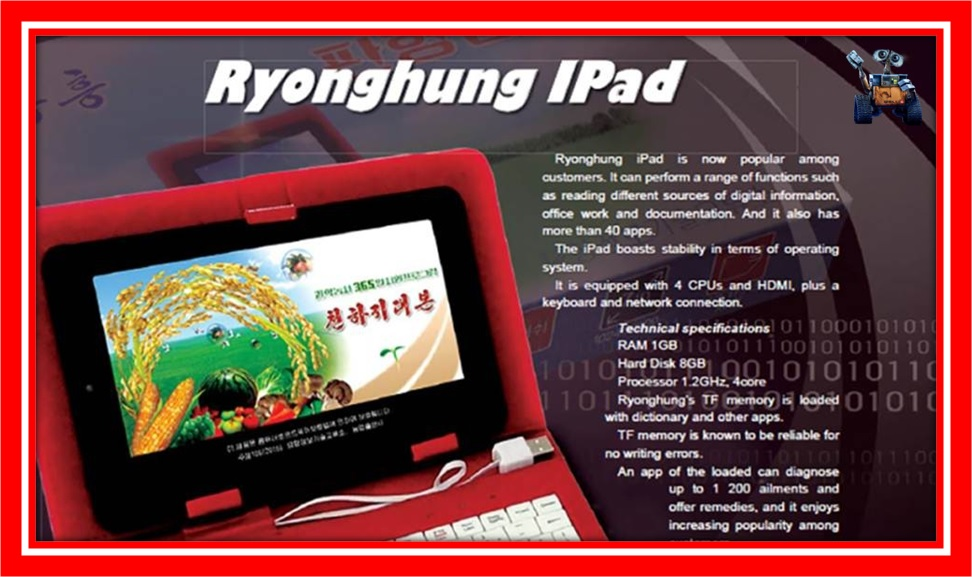
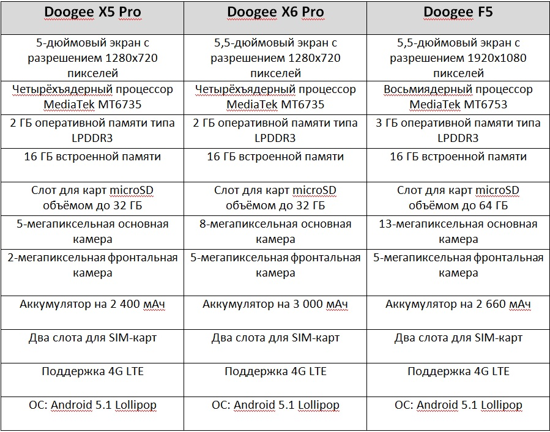

Новости науки и техники
14.07.2017г. До чего дошел прогресс
«Умные» дома, часы, кроссовки, зубные щетки, казалось бы, что еще можно сделать лучше и современнее. «А не модифицировать ли нам солонку?» - подумали краудфандинги, собравшиеся на сайте Indiegogo.
.jpg)
Читать полностью...
Сказано – сделано, и буквально на днях публике был представлен проект первой в мире «умной» солонки Smalt. Ее задача – регулированная выдача соли в соответствии с установленными требованиями.
Управлять такой smart-солонкой можно с помощью смартфона или напрямую, через LED-экран. После выставления необходимых параметров, заданное количество продукта будет поступать в съемный лоток, откуда его уже спокойно можно будет брать.
Кроме этого, по задумке производителей, солонка Smalt сможет воспроизводить музыку и радовать своего владельца несколькими вариантами подсветки.
Компания по сбору средств для воплощения данного проекта в жизнь уже стартовала, поэтому нам остается только ждать массового выпуска солонки. Или же Вы можете вложиться в ее производство уже сегодня, в этом случае «умная» солонка обойдется Вам в 2 раза дешевле своей предполагаемой рыночной стоимости.
При этом если Вас интересует тема «умных» вещей, Вам наверняка будет интересно узнать о создании нового вида печатной пленки, способной сделать «умнее» любую вещь. Ее «отцы» – группа ученых Наньянского технологического университета.
Суть такого изобретения одновременно гениальна и проста: его создатели научились печатать абсолютно любые микросхемы на абсолютно любых подложках. Принцип такой печати схож с процессом нанесения изображения на футболки, что и объясняет низкую стоимость изобретения.
То есть в обозримом будущем, если, конечно, такое изобретение будет использоваться массово, мы сможем получить упаковку для молока, которая будет сама напоминать о своем сроке годности.
Или же мы будем использовать материал для перевязки, который будет напоминать о необходимости смены повязки, и «умные» обои, с помощью которые можно будет совершать звонки или пользоваться интернетом.
14.07.2017г. Vertu, прощай!
Около недели назад британские информационные источники сообщили: компания «Vertu», выпускающая мобильные телефоны высшего класса (стоимость некоторых моделей доходила до 40.000$) обанкротилась.

Читать полностью...
В результате этого вся команда компании, состоящая из 200 человек, была распущена, а мир остался без мобильных устройств, открыто демонстрирующих финансовое благополучие владельца.
Как такое могло произойти с брендом, занимающим лидирующие позиции в своем сегменте рынка на протяжении последних 15-20 лет? Ответ очевиден: Vertu просто не смог выдержать конкуренции с компаниями Apple и Samsung.
И это даже не смотря на тот факт, что последние мобильные устройства Vertu в целом соответствуют современным требованиям.
Так, например, смартфон Vertu Aster Chevron оснащен 4-ядерным процессором Qualcomm Snapdragon, имеет 13-мегапиксельную камеру и аккумулятор емкостью 2275 мАч. Кроме этого, смартфон оснащен экраном из сапфирового стекла, так же он имеет титановый корпус.
Разумеется, подобная «одежка» напрямую влияет на стоимость устройства, приводя ее к показателю в 300.000 рублей.
А теперь смотрите: тот же iPhone 7 Plus имеет схожие с Vertu Aster Chevron характеристики, однако стоит он в 5 раз меньше. Более того, при определенной доплате яблочный аппарат так же можно «одеть» в золото или кожу.
Именно это и осознали основные покупатели устройств бренда Vertu (бизнесмены из России, Китая, Саудовской Аравии), отказавшиеся от показной роскоши в пользу удобства в использовании.
Что же будет дальше с компанией? Как утверждают сторонние наблюдатели, с технической точки зрения Vertu в любом случае не успеет догнать конкурентов. Наверное, именно по этой причине новый владелец компании Хакану Узану (турецкий бизнесмен) планирует перенести производство устройств под данным брендом в Китай.
Естественно, в этом случае Vertu потеряет свое «лицо», свой имидж, нарабатываемый с 1998 года, ведь именно тогда финская компания Nokia открыла свое дочернее предприятие в Великобритании.
Каким был Vertu вчера? Ручная сборка, платина, титан, сапфировые экраны, драгоценные камни, круглосуточный сервис-консьерж. Каким будет Vertu завтра – покажет время. Но в любом случае, время кричащей роскоши, заключенной в рамки мобильного устройства, однозначно прошло.
14.07.2017г. Приключенческий шутер «Metro», продолжения не будет?
Уже более 3-х лет прошло с момента выпуска последнего шутера Metro: Last Light, поэтому геймеры по всему миру даже не надеялись на выпуск продолжения полюбившейся им игры.
Читать полностью...
Однако украинская студия 4A Games смогла поразить воображение игроков, анонсировав новую часть «Metro» в рамках игровой выставки E3 2017.
Как утверждают сами разработчики, они и по сей день до конца не верят в возможность создания шутера, полностью отвечающего всем требованиям Глуховского, так как его предложения зачастую было невозможно реализовывать с технической точки зрения. Именно по этой причине разработка игры производилась тайно.
Что можно ожидать от «Metro Exodus»? В первую очередь игроки столкнутся с более открытым, нелинейным пространством. А во вторую очередь они будут ошеломлены масштабом задумки разработчиков, которая потребовала просто титанического количества времени и сил от украинско-мальтийской команды студии 4A Games.
Что ж, нам остается дождаться релиза данной игры, запланированного на 2018 год, чтобы самостоятельно оценить ее возможности.
Кстати, если Вы проживаете в частном доме, то, как раз к следующему году Вы можете построить для себя самый настоящий отдельный кабинет для игр, где абсолютно никто и ничто не сможет Вам помешать наслаждаться желанным шутером.
Именно так поступил Боб Линдалл из Америки, который является создателем помещения под названием «Krazy Case». Такой «кабинет» для геймеров представляет собой алюминиевую конструкцию с металлическими перекрытиями, внутри которой располагается кресло, система вентиляции и различные геймерские комплектующие.
В частности, Линдалл разместил в своем кабинете процессор Intel Core i7-7700K в паре с видеокартой GeForce GTX 1070 и оперативной памятью G.Skill Ripjaws DDR4, а так же оснастил его 29-дюймовым монитором LG UltraWide и материнской платой MSI Z270 SLI.
Ко всему вышесказанному можно добавить только одно: «Боб, чувак, ты наш герой!»:)))
01.07.2017г. Молекулярная «рогатка» - терапевтическое оружие будущего
Ученые Монреальского университета создали удивительное устройство: это микроскопический предмет, размер которого равен 1/20.000 толщины волоса человека. Оно состоит из цепочек ДНК и специальных ферментов.
Читать полностью...
Внешне данное устройство можно сравнить с обычной рогаткой или катапультой, его предназначение – прицельная «стрельба» лекарственными молекулами по «целям» (в случае возникновения заранее запрограммированных условий).
Говоря доступным языком, устройство прикрепляется к определенным антителам (к тем его молекулам, которые имеют форму буквы Y) и с помощью синтетической ДНК, выступающей в роли «резинки», ведет «огонь» по «вражеским» клеткам.
Но начинает оно работать только в том случае, если сами антитела изменяются или каким-то иным образом реагируют на возникновение определенного заболевания.
То есть, если нет конкретной болезни, то, значит, «катапульта» бездействует. Если же появилось заболевание, то «рогатка» начинает работать.
Главной особенностью такого устройство ученые называют его универсальность, ведь оно работает с различными антителами. На данный момент времени уже проведены успешные эксперименты с антителами ВИЧ.
В своем интервью профессор Франческо Риччи отметил, что: «Антитела различных типов являются своего рода маркерами определенных заболеваний, и, изменяя «спусковой механизм» рогатки, которым является реакция антитела, мы можем заставить эту рогатку попасть молекулой препарата в строго определенную цель».
Таким образом, после того, как будет создано «хранилище» биомаркеров разных заболеваний, врачи смогут без проблем создавать молекулярные «катапульты», подходящие конкретному пациенту и помогающие бороться с конкретной болезнью.
Благодаря этому, эффективность принятия лекарственных препаратов увеличится в несколько раз, а риск возникновения побочных реакций, наоборот, в несколько раз снизится.
24.06.2017г. Теперь можно использовать вторую SIM-карту в iPhone
Все счастливые обладатели смартфонов, имеющих «заветное» изображение надкушенного яблока на задней панели, единогласны во мнении, что как бы ни был функционален iPhone, слот для второй SIM-карты ему бы не помешал.

Читать полностью...
Однако с этим мнением не согласны представители Apple, поэтому компания продолжает выпускать крутые смартфоны, но с возможностью размещения всего одной SIM-карты.
Что делать, если Вы не представляете жизни без «яблочного» аппарата, но и вторая симка Вам необходима?
Самый оптимальный выход из данной ситуации – приобретение NeeCoo Me2. NeeCoo Me2 представляет собой устройство, в которое вставляется вторая SIM-карта. Оно подключается к «яблочному» смартфону по Bluetooth и через приложение Morecard позволяет человеку принимать звонки и SMS со своего второго номера.
Радиус действия NeeCoo Me2 – 10 метров, его размера сопоставимы с размерами обычной банковской карты. Уровень защиты довольно высокий, поскольку устройство «спрятано» в металлическом корпусе и дополнительно защищено вставками из закаленного стекла.
При этом потерять NeeCoo Me2 крайне сложно, так как при его удалении от смартфона устройство начинает издавать звуковые сигналы, а на iPhone приходит соответствующее уведомление.
Из этого следует простой вывод: Вам больше не нужно «метаться» между различными операторами сотовой связи, выискивая тариф с оптимальными условиями. Теперь Вы можете просто купить NeeCoo Me2 и спокойно носить его в кармане или в сумке.
Так же стоит отметить, что данное устройство работает не только с iPhone, но и с iPad, имеющим модуль Wi-Fi.
24.06.2017г. Можно ли не бояться смерти?
Абсолютно каждого человека на протяжении всей его жизни преследуют разнообразные страхи. И самый главный из них, зачастую приводящий к депрессии – страх смерти.

Читать полностью...
Ученые одного из Барселонских университетов решили бороться с данной проблемой довольно необычным способом, а именно: с помощью виртуальной реальности.
Суть эксперимента: испытуемого человека помещают в виртуальное тело, вынуждая его мозг привыкать к нему. После этого человека разъединяют с придуманным образом, заставляя его мозг вновь адаптироваться к новой ситуации.
Таким образом, мозг постепенно «привыкает» к мысли о том, что бессмертных людей не существует, и рано или поздно душа рассоединится с телом.
Кстати, VR уже начали использовать для обучения людей и прививания им новых навыков. Так же, если опираться на мнение испанских ученых, устройству виртуальной реальности вполне по силам победить одну из проблем современного общества, носящую название «расизм».
Ведь если белого человека поместить в виртуальном мире в тело человека, имеющего иной цвет кожи, то этот человек рано или поздно свыкнется с новым, несуществующим образом. Как результат, в реальной жизни этот белый человек будет более лоялен к представителям других наций.
22.06.2017г. Кто помнит компьютерные клубы?
Если Вы помните, что представляли собой компьютерные клубы, пользующиеся огромной популярностью в начале 2000-х годов, то, значит, Вам уже точно больше 25. И, наверняка, Вы в тайне ностальгируете по тем временам, когда Вы с друзьями собирались в одном из таких клубов, чтобы поиграть в любимые игры или просто поболтать.
Читать полностью...
Так вот, российское подразделение NVIDIA (американская компания, специализирующаяся на разработке процессоров и графических ускорителей) решило «воскресить» забытые традиции и вновь запустить компьютерные клубы, только под другим «соусом».
Теперь, по задумке NVIDIA, такие современные клубы должны объединять в одном месте не просто геймеров, а всех любителей киберспорта, прибыльность рынка которого растет буквально каждый день. Кстати, по прогнозам экспертов к концу 2017 года этот показатель достигнет планки в 1 миллиард долларов.
Так же не стоит забывать и о том, что правительство РФ уже приравняло киберспорт к самым обычным видам спорта, а, значит, данное направление должно и будет развиваться на общероссийском уровне.
В качестве справки: киберспорт (e-Sports) – разновидность соревнований в виртуальном пространстве, которое моделируется с помощью компьютерных технологий.
Почему нельзя получать игровой опыт в домашних условиях? Как заявляют представители NVIDIA: «можно, но в рамках компьютерных клубов это делать гораздо эффективнее».
С этим трудно поспорить, а потому всем только и остается ждать возвращения моды на компьютерные клубы, которые, между прочим, должны будут пройти соответствующую сертификацию, прежде чем они смогут начать принимать под своим «крылом» киберспортсменов.
Уже известно, что всего предусмотрено 3 вида сертификации, основное различие – степень оснащенности того или иного клуба.
При этом никто не запрещает начинать работать и клубу, не получившему сертификат NVIDIA, однако только сертифицированные «заведения» будут иметь преимущества перед обычным компьютерным клубом (например, они будут продвигаться в соцсетях).
07.06.2017г. Разработан дешифратор WannaCry, но радоваться еще рано
Что представляет собой WannaCry, и как бороться с данным вирусом Вы можете узнать из этого материала Wanna Cry 2.0: действительно ли надо плакать?
Сегодня же хочется поделиться с Вами информацией о том, что в конце мая французский исследователь Benjamin Delpy создал дешифратор WannaCry - программа WannaKiwi, которая позволяет расшифровывать закодированные вирусом файлы без их потери.

Читать полностью...
Пока программа работает только под Windows XP, Windows Server 2003 и Windows 7, но в теории она должна работать и на Windows Vista, 2008 и 2008 R2.
Кстати, первый созданный дешифратор WannaCry носит название WannaKey, и работает он только под Windows XP. Именно на базе этой программы Бенджамин Делпи создал свой собственный инструмент.
Так вот, алгоритм работы обеих программ идентичен: они находят простые числа ключа, по которому его и восстанавливают. Сами же числа ключа шифрования сохраняются на устройстве после того, как происходит его заражение вирусом.
Однако чтобы любая из программ сработала максимально продуктивно, пользователю:
• необходимо воспользоваться ими сразу же после заражения;
• ни в коем случае нельзя перезагружать компьютер, планшет или смартфон (в противном случае компоненты, используемые WannaKey и WannaKiwi для восстановления ключа, будут перезаписаны).
Еще одной неприятной новостью является тот факт, что создатели вируса WannaCry, так же как и «борцы» за компьютерную безопасность, не теряли время зря. В результате этого в конце мая компьютеры всего мира вновь подверглись «атаке» нового вируса под названием EternalRocks.
Он использует тот же механизм распространения, что и WannaCry, но дополнен еще шестью инструментами, среди которых DoublePulsar и EternalChampion. Таким образом, новый «штамп» всемирно известного вируса «умеет» двигаться и поражать устройства гораздо быстрее.
Однако не стоит впадать в панику, поскольку изучение первых найденных образцов нового вируса показывает его относительную безвредность (EternalRocks не имеет деструктивных элементов в своем коде).
Остается надеяться, что создатели вируса не смогут это удаленно изменить, запустив, например, шифровальные механизмы на зараженных устройствах.
В любом случае не забывайте об элементарных правилах безопасности и тогда вероятность «встретиться» с каким-нибудь вирусом будет сведена к минимуму.
05.06.2017г. Разбитый экран – больше не проблема!
Для всех тех, кто является поклонником индийской марки мобильных телефонов Micromax, есть отличная новость: компания наконец-то представила на российском рынке свое новое «детище» - Canvas 2 (2017).
Сразу же поговорим о плюсах этого смартфона:
Читать полностью...
Для всех тех, кто является поклонником индийской марки мобильных телефонов Micromax, есть отличная новость: компания наконец-то представила на российском рынке свое новое «детище» - Canvas 2 (2017).
Сразу же поговорим о плюсах этого смартфона:
• доступная цена (9.990 рублей);
• металлический каркас;
• сканер отпечатка пальцев;
• защитное закаленное стекло Gorilla Glass 5, которым защищен экран;
Интересный момент: индийский производитель готов один раз бесплатно заменить разбившееся стекло в течение гарантийного срока (1 год). Согласитесь, довольно «вкусное» и нестандартное предложение.
• фронтальная 5-мегапиксельная камера имеет угол обзора 84,3°;
• задняя 13-мегаписельная камера позволяет делать снимки в различных режимах, в том числе, и снимки с размытым задним планом;
• операционная система Android 7.0 Nougat;
• аккумулятор емкостью 3 050 мАч.
В остальном же Micromax Canvas 2 (2017) имеет просто достойные характеристики, делающие данный смартфон довольно привлекательным в глазах потребителей.
• Размеры: 140,4 х 69,7 х 8,6 мм
• Дисплей 5"
• Процессор MediaTek MT6737, 4 ядра, 1,3 ГГц
• 2 SIM-карты
• Оперативная память 3 Гб
• Встроенное хранилище 16 Гб
• Поддержка карт памяти microSD до 64 Гб
Если Вы хотите стать обладателем данного индийского смартфона Micromax Canvas 2 (2017), то Вы уже сегодня можете оформить заказ на официальном сайте компании.
3.06.2017г. Роботы уже могут обучать друг у друга! Читать полностью...
Исследователи Массачусетского технологического института долгое время работали над системой, позволяющей роботам приобретать новые навыки не только от программистов, но и от подобных себе, то есть от других роботов.
И, наконец-то, совсем недавно работа над проектом была завершена, а исследователи Лаборатории информатики и искусственного интеллекта представили систему под названием C-LEARN.
C-LEARN позволяет без проблем проводить обучение роботов абсолютно всем людям. Для этого человеку всего лишь необходимо показать конкретному роботу ряд действий, сопровождающих ту или иную работу, и оговорить правила, которые автоматическому устройству надо обязательно соблюдать.
После выполнения работы, в первый раз она обязательно проводится под наблюдением человека, робот «ждет» принятия или отклонения результатов его деятельности.
В том случае, если человек принимает работу, то все совершенные устройством действия попадают в базу его данных, откуда уже робот может передавать их другому роботу.
Интересный факт: при участии человека в работе автоматического устройства, успешное завершение процесса происходит в 100% случаев. Когда же робот передает свои знания «собрату», успех наблюдается в 87,5% случаев. Как утверждают исследователи, это очень достойные цифры.
Так, например, сотрудники CSAIL обучили робота, предназначенного для обезвреживания взрывных устройств, открывать двери и перемещать различные предметы. В свою очередь этот робот (Optimus) обучил другого робота (Atlas) этим же навыкам.
В конечном результате оба автоматических устройства с одинаковым успехом справлялись с подобными действиями.
Как работает система C-LEARN? В нее заложено два принципа: обучение на примере обычного человека и обучение с помощью высокоуровневого программирования.
В связи с тем, что каждый принцип в отдельности обладал своими собственными недостатками, исследователи приняли решение их объединить. В результате этого и появилась система, приносящая превосходные результаты.
Если же говорить кратно, то система C-LEARN – когда робот может не просто работать в любой ситуации и при любой сложности, но и когда он еще может заранее планировать свои действия.
01.06.2017г. Корейский «конфуз»: КНДР выпустила свой iPad Читать полностью...
Не секрет, что «яблочную» продукцию давно и не безуспешно копируют различные китайские производители. Приобрести подобные iPhone и iPad без проблем можно в онлайн-магазинах, где доступная цена соседствует с посредственными характеристиками и средним качеством.
Однако корейская компания Ryonghung решила «переплюнуть» своих соседей и выпустила на рынок планшетный компьютер «Ryonghung iPad».
Примечательно, что американская компания Apple пока еще никак не отреагировала по поводу нарушения ее авторских прав на бренд «iPad», но, скорее всего, такое затишье временное.
Что же касается технических характеристик Ryonghung iPad, то они точно далеки от копируемого оригинала, и имеют следующие показатели:
• диагональ дисплея 7";
• процессор 4 ядра, 1,2 ГГц;
• оперативная память 1 ГБ;
• встроенный накопитель 8 ГБ.
При этом планшетный компьютер продается с внешней клавиатурой и с предустановленными приложениями (около 40 штук). Установить в него иные приложения можно только через внешнюю карту памяти.
И если верить информации, предоставленной одной северокорейской газетой, то Ryonghung iPad имеет сертификат местного регулирующего органа и пользуется большим спросом среди покупателей.

11.05.2017г.В 2020 году летающие «такси» будут доступны каждому! Читать полностью...
В ноябре прошедшего года международная компания из Сан-Франциско (Uber Technologies Inc.) представила общественности свою первую модель летающего автомобиля, который по задумке создателей должен дополнить уже имеющуюся на сегодняшний день транспортную сеть.
Стоит отметить, что компания Uber – известный во всей Америке разработчик мобильного приложения, позволяющего пользователям в максимально короткие сроки находить свободное такси или частного извозчика.
Так вот, летающий автомобиль будет производиться совместно с компанией Aurora Flight Sciences, специализирующейся на строительстве беспилотных и пилотируемых летательных аппаратов.
Новое электрическое «транспортное средство» будет одновременно вмещать в себя двоих пассажиров, и будет обладать возможностями зависания, вертикального взлета и вертикальной посадки (все благодаря опять же вертикальным роторам с пропеллерами).
Во время полета летающий «автомобиль» будет использовать задний горизонтальный винт, чтобы аппарат мог двигаться в наиболее эффективном режиме.
При производстве такого «такси» разработчики будут использовать батареи и электрические двигательные установки от аппарата XV-24A X-plane, автономную систему управления от самолета Centaur, а так же систему восприятия окружающей среды и предотвращения столкновений, которая сегодня успешно используется в ВМС Соединенных Штатов Америки.
Примечательно, что опытный образец уже совершил в апреле этого года несколько успешных полетов, что сулит «такси будущего» отличные перспективы.
Как уверяют представители компании Uber, если все тесты пройдут успешно, то к 2020 году будет создано более 50 летающих «такси», услугами которых так же можно будет воспользоваться с помощью одноименного приложения для телефонов и компьютеров.
08.05.2017г.Внимание! Эксперименты над детьми плотно входят в нашу жизнь! Читать полностью...
Довольно сложно встретить человека, который бы не был знаком с психологическим экспериментом, проводимым учеными Стэнфордского университета в конце 60-х начале 70-х годов. В народе подобный тест получил название «зефирный».
Суть эксперимента: дети дошкольного и младшего школьного возраста заходили в комнату и видели, что на столе стоит тарелка, на которой лежала одна штучка зефира или одно печенье.
Взрослый, находящийся в комнате, объяснял ребенку правила: либо он сразу съедает лакомство, либо он ждет определенное количество времени и получает сладостей в два раза больше. Естественно, некоторые дети ждали, а некоторые нет.
В дальнейшем, а именно: в 1988, в 1990 и в 2011 ученые университета произвели так называемые «контрольные замеры». Проще говоря, они проверили, как сложилась судьба детей, принимавших участие в их эксперименте.
И что же в результате выяснилось? Что те малыши, которые смогли выждать время и не сразу скушать лакомство, «устроились» в жизни лучше других участников теста.
Корейская компания Samsung решила использовать этот эксперимент для создания своего нового мобильного приложения под названием Marshmallow. Цель такого приложения – научить ребенка рационально использовать свое время.
Примечательно, что родители смогут устанавливать определенные точки контроля, например, время сна или пробуждения, однако основной «груз» ответственности все равно останется лежать на плечах детей.
Разумеется, умение правильно распределять время, по задумке Samsung, должно как-то вознаграждаться. И в качестве вознаграждения используются специальные очки, которые в последующем можно будет обменивать на подарочные карты. Конечно, с разрешения родителей.
Подведем итог: приложение Marshmallow – довольно интересное и полезное мобильное приложение, которое если и не стоит использовать постоянно, то проверить хотя бы на себе его необходимо.
02.05.2017г.Чем запомнился апрель для истинных техников? Читать полностью...
Во всем мире все настоящие фанаты современных гаджетов с нетерпением ждали презентации нового смартфона от компании Xiaomi. И, наконец-то, этот день настал и на суд зрителей был представлен новенький Mi6.
Пройдемся по его плюсам:
1. стеклянный корпус спереди и сзади, дополненный металлической нержавеющей рамкой по бокам, смотрится стильно и интересно;
Кстати, смартфон доступен и в иной модификации: с керамической задней панелью. Примечательно, что в таком случае камеры обрамляются настоящим 18-ти каратным золотом.
2. закругленные грани и 3D-стекло заметно отличают модель от предыдущих «собратьев»;
3. аккумулятор емкостью 3 350 мАч;
Вот она, мечта всего человечества: иметь смартфон, который может держать заряд весь день!
4. стереодинамики (их расположение полностью копирует расположение динамиков в iPhone 7);
5. возможность регулировать яркость дисплея (от 1 нита до 600 нит) и возможность использовать фильтр синего цвета;
Благодаря последнему пункту глаза пользователей данного смартфона будут меньше уставать.
6. наличие инфракрасного порта (позволяет управлять бытовой техникой);
7. двухканальный модуль Wi-Fi (поддержка 802.11ac MU-MIMO);
8. двойная задняя камера.
Здесь все: и 12 Мегапикселей, и оптическая стабилизация, и возможность 2-хкратного увеличения без потери качества фото.
К минусам Xiaomi Mi6 можно отнести:
1. защиту от брызг;
К минусам данный пункт относится только потому, что изначально производители говорили о полной водонепроницаемости модели.
2. отсутствие 3,5-мм разъёма для наушников.
Теперь послушать музыку можно будет только с помощью беспроводной гарнитуры.
Во всем же остальном Xiaomi Mi6 имеет стандартные для предыдущих моделей характеристики:
64-разрядный восьмиядерный процессор Snapdragon 835 (максимальная тактовая частота 2,45 ГГц);
графический ускоритель Adreno 540;
6 ГБ двухканальной 64-битной оперативной памяти типа LPDDR4X;
объём встроенного накопителя может быть как 64, так и 128 ГБ.
Кстати, стартовая цена на это Чудо отталкивается от планки в 20.000 рублей. Но, к сожалению, приобрести Xiaomi Mi6 пока можно только в интернет-магазинах (доступны черные, белые и синие цвета).
01.05.2017г. Нормальный смартфон от 4.000 рублей– миф или реальность? Читать полностью...
В жизни случается всякое, например, Вы потеряли или поломали свой смартфон, а денег на новый нет. Или Вы хотите приобрести первую взрослую «игрушку» для своего ребенка, но сильно тратиться по понятным причинам не хотите.
Да даже может быть Вы решили порадовать своих пожилых родственников новым смартфоном, но понимаете, что с навороченной моделью они не справятся.
Что делать? Выход прост: приобретите смартфон одной молодой китайской корпорации, являющейся подразделением концерна KDV. Основная деятельность этого концерна - производство и обслуживание телекоммуникационного оборудования.
Сразу хочется оговориться: не ждите, что смартфон за довольно «смешные» деньги будет удивлять Вас какими-то своими характеристиками. Однако и не бойтесь смартфона «Made in China», ведь телефоны родом из Китая сегодня мало чем отличаются от аппаратов других производителей.
При этом учтите, что если Вы приобретете смартфон, принадлежащий малоизвестной Вам фирме, Вы можете столкнуться с большими трудностями, например, с прошивкой.
Так вот, мало того, что смартфоны Doogee принадлежат бюджетной категории смартфонов, так еще и в мае они продаются с хорошей скидкой, и в зависимости от модели стоимость аппарата варьируется в пределах от 3.500 до 6.000 рублей.

В качестве справки: существует несколько предположений, как именно расшифровывается название бренда Doogee. По одной из версий название состоит из двух древнекитайских слов. Первое из них обозначает «верный путь», «хорошая работа», а второе – «разнообразие».
Если сложить оба перевода вместе, то получится неплохая заявка на победу, Вы не находите?
28.04.2017г. Революционные технологии: как чип распознавания речи сможет изменить жизнь Читать полностью...
Сегодня очень сложно найти людей, которые бы не знали, что представляет собой Siri (голосовой помощник). По сути, эта технология является разновидностью искусственного интеллекта, собирающего информацию извне и реагирующего на нее адекватным образом.
Существует множество прототипов Siri, которыми с удовольствием пользуется большое количество людей.
При этом прогресс не стоит на месте, и ученые из разных стран постоянно работают над созданием технологий, делающих процесс «общения» с электронными устройствами более эффективным.
Последней разработкой в данной сфере стало изобретение инженерами Массачусетского технологического университета чипа распознавания речи. Его основные отличительные черты – производительность и энергоэффективность.
Что это значит? Все просто: когда смартфон занят обработкой речи пользователя, то он в этот момент потребляет около 1 Ватта энергии, и в рамках мобильного телефона это допустимые энергетические затраты.
А вот, например, уже оснастить очки или часы такими программами, чтобы сделать их «умными», не получится, поскольку батарея подобных вещей обладает гораздо меньшей емкостью, чем аккумулятор смартфона.
Что сделали исследователи MIT? Они создали чип, способный потреблять на 90-99% меньше энергии, чем сегодня потребляют программы распознавания речи. Кроме этого, данная революционная разработка «умеет» анализировать поступающую к ней информацию, разделяя ее на просто шумы и речь.
Таким образом, новейшая технология от исследователей MIT во время работы потребляет от 0,2 до 10 милливатт энергии (в зависимости от скорости распознавания речи), и практически не обращается к своей внешней памяти. Достигается это за счет сжатия информации и использования небольших фрагментов аудиозаписей.
Как изменится наше завтра благодаря данному изобретению? Мы начнем повсеместно использовать сверхминиатюрные электронные устройства, значительным образом облегчающие нашу жизнь и жизни наших близких людей.
Пока же опытный образец чипа был только представлен на рассмотрение широкой публике в рамках Международной конференции по твердотельным схемам (International Solid-State Circuits Conference).
16.10.2015г.Первый автоматический телескоп успешно работает на Луне уже почти два года Читать полностью
16.10.2015г. Microsoft распродаёт планшеты Surface Pro 3 со скидками Читать полностью
14.09.2015г. Первый в мире смартфон, способный превращаться в ПК на ОС Windows
Читать полностью
9.10.2015г. Blue Brain создал первый в мире кибермозг из 31 тысячи нейронов Читать полностью
27.06.2015г. RADBO - лазерная система для обезвреживания неразорвавшихся боеприпасов и деактивации полей минных заграждений Читать полностью
26.06.2015г. Созданы нанороботы, способные двигаться внутри организма и доставлять лекарственные препараты строго в заданную точку Читать полностью
22.06.2015г. Компания Google показала, на что похожи "мечты" их систем искусственного интеллекта Читать полностью
18.04.2015г Космический телескоп Spitzer обнаружил еще одну из самых далеких среди известных людям экзопланет. Положение планеты в галактике. Космический телескоп НАСА Spitzer, работая в паре с одним из наземных телескопов, обнаружил новую экзопланету, находящуюся на удалении около Читать полностью
17.04.2015г. Kingston KC 310 станет самым вместительным твердотельным накопителем в истории компании. Твердотельные накопители получают всё большую популярность благодаря высокой скорости обмена данными. Тем не менее объём таких хранилищ чаше всего уступает стандартным HDD-носителям. Известный производитель Kingston Digital намерен Читать полностью...
16.04.2015г.Планшет HP ElitePad HealthCare Tablet найдёт применение в медицине. На выставке в Чикаго, посвящённой медицинским исследованиям, компания HP анонсировала ElitePad HealthCare Tablet - планшет, созданный для работников здравоохранения. Устройство поддерживает Читать полностью
14.04.2015г. Начата работа по созданию саморазвивающегося программного обеспечения способного поддерживать себя в актуальном состоянии сотни лет Читать полностью
10.04.2015г. Современные смартфоны уже могут выполнить множество различных действий. Но пока еще одно действие остается за гранью их возможностей - способность сканирования трехмерных объектов с Читать полностью
{kind=link}